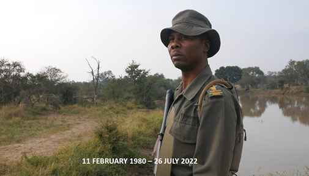

Project Anton
Launched in January 2023, Project Anton is a public-private partnership initiative led by Scotiabank, and supported by FINTRAC, and other key domestic and international partners to combat illegal wildlife trade.
Results
Publication of Operational Alert providing reporting entities with ML indicators for IWT.
Over 50 suspicious transaction reports submitted to FINTRAC.
Over 40 refers of actionable intelligence to Canadian and international law enforcement.
Development of a Project Anton FIU Community of Practice.
Seven nation agreement on a Statement of Principles to combat financial crime related to IWT
Inspiration
Anton Mzimba
